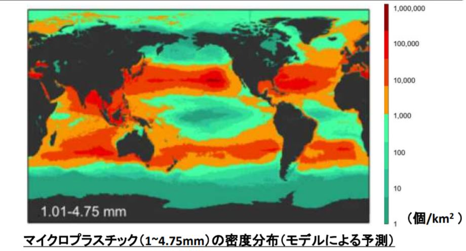

マイクロプラスチックとは？
マイクロプラスチックは海などに流出したプラスチックごみが紫外線や波の影響を受け、５ミリ以下になった断片を指す。
年間に3億トン生産されその半分程度が使い捨てされている。
→マイクロプラスチックごみの原因
最近の下水処理場で処理をすればマイクロプラスチックを99％で除去できるが未だに、100％には至ってない。下水処理水中からもマイクロプラスチックは検出される。
50万人程度の下水処理場の処理水中から、1日推定で10億個程度のマイクロプラスチックが検出される。
→マイクロプラスチックごみの現状
プラスチックの生産量は増加傾向にある一方で、廃棄量も増加している。適切に処理されないものは最終的に海洋へと流れつく。
プラスチックは難分解性であり、長期間にわたって海洋中に存在し、サメやウミガメ等の、様々な海洋動物が摂食していることが確認されている。
下図は海水中のマイクロプラスチックの世界分布を表している。
日本やアメリカをはじめとする先進国の周辺の海でマイクロプラスチックの量が多くなっている。

→マイクロプラスチックごみの解決策
1）すべての国民がプラスチックの廃棄を適切に行う。
2）生分解性ポリマーへ代替する
3）使い捨てプラスチック製造を禁止する
4）リサイクルしやすいプラスチックの製品を開発する
5）非破壊劣化診断による劣化管理と寿命予測で非管理の短期使用から管理された
長期使用にプラスチックの需要構造を変える
6）小さな破片まで劣化されない樹脂、添加剤系の開発
2030年までにSDGｓの目標を達成するためにも一人ひとりの努力が必要不可欠です！
トップページはこちら